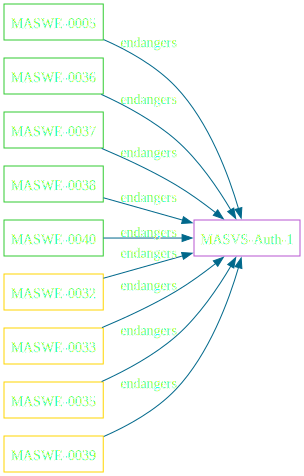
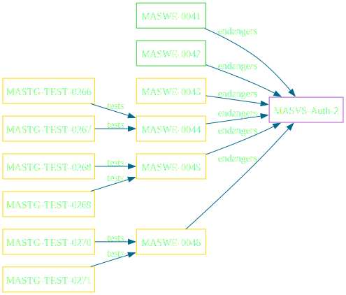
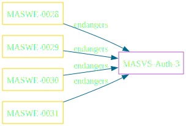

Bild generiert mit Firefly
The app uses secure authentication and authorization protocols and follows the relevant best practices.
The app performs local authentication securely according to the platform best practices.
The app secures sensitive operations with additional authentication.
L1, P
L2
L1, P
L2
L2


